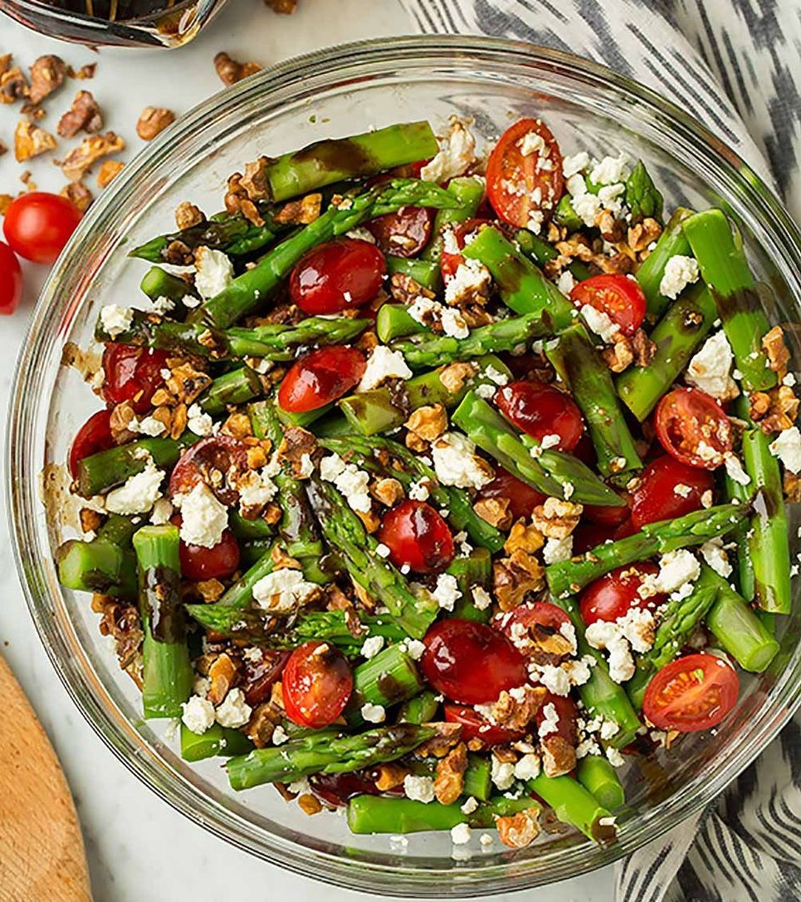

En una fuente (apta para horno) colocar el brócoli, la crema por encima, el queso muzzarella, el queso tybo (rallado) y condimentar a gusto.
Llevar a horno precalentado a 180° y dejar que se gratine.
¡Emplatar y disfrutar!
La cantidad de ingredientes varia segun la cantidad de personas.
Hamburguesas de soja
INGREDIENTES
Soja 300gr.
Huevos 2und.
Cebolla 1und.
Ajo 2dtes.
Perejil (a gusto).
Pan rallado.
Aceite de oliva.
Sal y pimienta.
Preparacion de la soja.
PASOS A SEGUIR
Remojar los porotos durante 8hs (todo la noche).
Hervir hasta que esten tiernos 40/50mins.
Procesarlos.
También se puede utlizar soja texturizada, la cual se hierve durante 15mins y esta lista para utilizar.
Por otro lado picamos finamente la cebolla, los 2 ajos y el perejil.
En un recipiente ponemos la soja junti con los 2 huevos, la cebolla, el ajo, el perejil y condimentos a gusto e integramos todo.
Luego añadimos pan rallado hasta obtener una masa maleable y compacta.
Formamos las hambueguesas del tamaño que deseemos.
En una sarten con aceite de oliva cocinamos las hambuergusas hasta que esten doradas de ambos lados.
Estas hambuerguesas las podemos acompañar con ensalada, pure, arroz, etc.
¡Emplatar y disfrutar!
Los ingredientes varian segun la cantidad de personas.
Ensalada de esparragos con ricota

INGREDIENTES
Esparragos 1paq.
Tomates cherry 100gr.
Ricota 50gr (a gusto).
A gusto:
Nueces peladas.
Semillas de girasol.
Vinagre 2cdas (opcinal).
Aceite de oliva.
Sal y pimienta.
PASOS A SEGUIR
Lavar y limpiar los esparragos retirando el tallo y hervirlos por 6mins (a gusto pueden, ser mas balndo o mas duros), una vez cocidos los retiramos del agua.
Cortar los tomates.
Trozar la ricota y la nueces.
Colocar todos los ingredientes en un boul y condimentar a gusto.
¡Emplatar y disfrutar!
Los ingredientes varian segun la cantidad de personas.